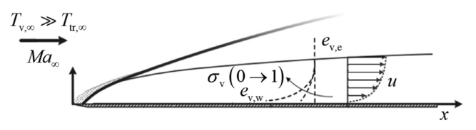
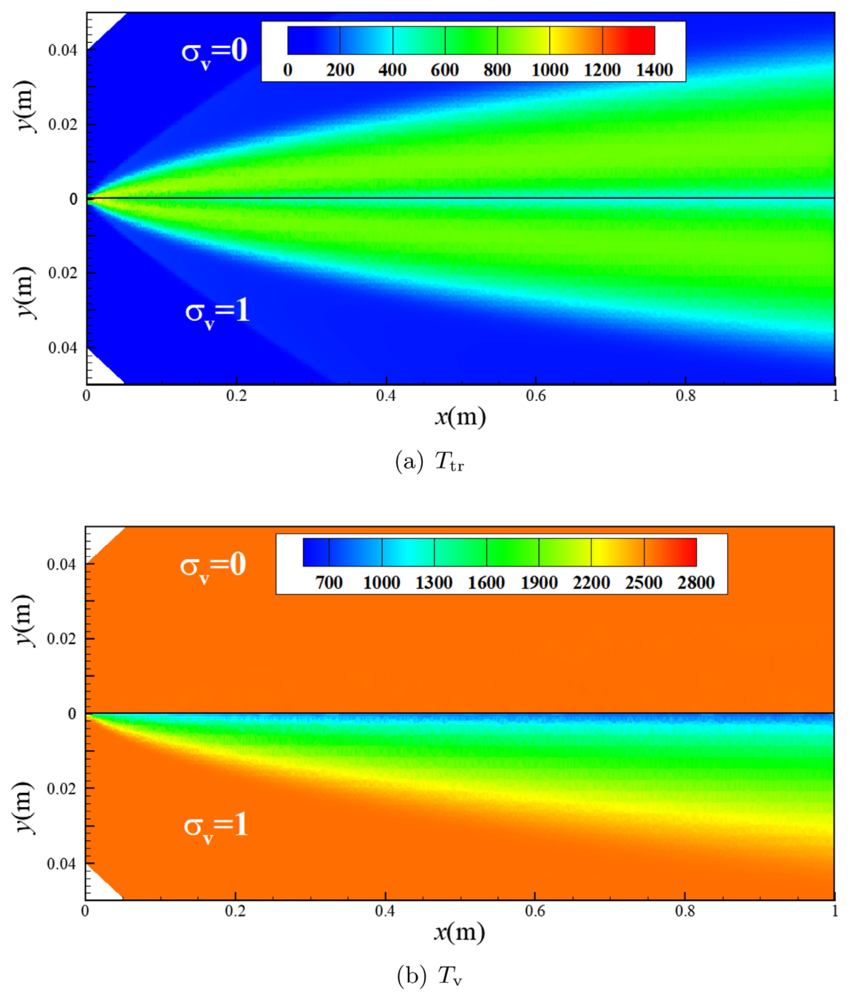
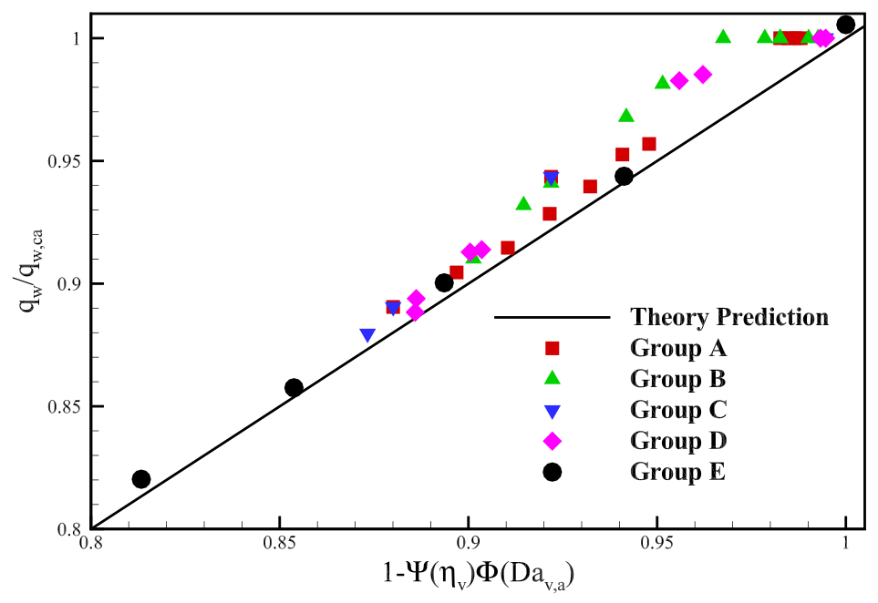
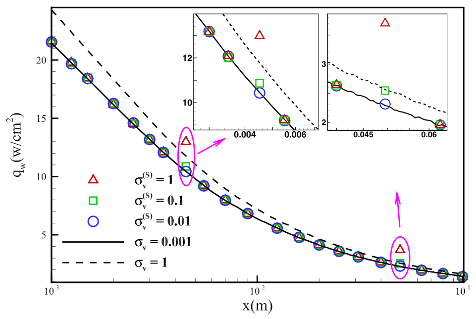

01中文摘要
在高超声速激波风洞中，高温驻室气体快速膨胀，振动能来不及松弛而冻结在高位，使试验段来流处于振动激发状态，显著影响气动热测量和天地换算。本文采用理论建模和直接模拟 Monte Carlo（DSMC）方法，研究振动能适应不完全对平板传热的影响。作者分析气体分子与壁面碰撞的能量传递微观过程，引入表征振动能非平衡程度的判据，并据此推导预测传热的解析公式，用数值结果检验其合理性。研究发现，与振动平衡或完全适应情况相比，热流最多可降低 18%；同轴热电偶传感器与模型材料性质差异可导致高达 62% 的测量偏差。
原始摘要（英文/原文）
In the hypersonic shock tunnel experiment, the high temperature reservoir gas expands so drastically that the vibrational energy of the gas is frozen at a high level in the test section, which could significantly affect the aero-heating measurement and ground-to-flight extrapolation. In this paper, theoretical modeling and direct simulation Monte Carlo methods are employed to study the effects of vibrational accommodation incompleteness on heat transfer to a flat plate under vibrational excitation freestream conditions. The microscopic process of the energy transfer by the gas molecule-surface collision is analyzed, and a criterion is introduced to characterize the nonequilibrium degree of the vibrational energy accommodation. Based on this criterion, an analytical formula is derived for prediction of the heat transfer performance, and its reasonability and effectiveness are also shown by the numerical results. It is found that the heat flux reduction could be as high as 18% compared to the vibrational equilibrium or complete accommodation cases. A further discussion of the heat flux measurement by coaxial thermocouple shows that a measurement deviation up to 62% could be induced by the difference between the sensor and test model’s material properties.
02阅读说明
理论建模 + DSMC 验证类论文（Int. J. Heat Mass Transfer 151 (2020) 119434，共 10 页）。材料为带页码全文、图注清单与 10 项抓图；文本层公式存在错位，已回读 PDF 第 3–4 页核对式(1)–(15)的符号与编号。Table 1、2 的工况数字取自 OCR 文本，个别指数（如 τf/τv 的 10 次幂）可能受 OCR 影响；Table 3 数值清楚。全文完整无截断。本记录页码均为 PDF/期刊页（1–10）。原文无实验测量，所谓“虚拟实验”为 DSMC 数值试验。 文章类型：期刊
03一句话核心与三句话摘要
振动激发来流平板加热：提出 Da_v,a 判据与解析热流式，热流最大降 18%，传感器材料差异可致 62% 偏差。
- 高焓激波风洞试验段来流振动能冻结，已有研究多依赖 CFD/DSMC，缺少耦合非平衡来流条件与非理想材料壁面的定量统一描述。 原文明确
- 采用振动冻结二维边界层双能量方程，借 Goulard 部分催化壁类比引入 Da_v,a，导出含 η_v 与 Da_v,a 的热流解析式，并用 DS2V 的 DSMC 结果验证（总热流最大偏差 3.4%）。 AI概括
- Da_v,a≤0.01 为冻结、≥3 为平衡、0.01–3 为非平衡区；不完全振动适应最多使热流降低 18%，而同轴热电偶与模型材料振动适应系数不同可造成最高 62% 的测量偏差。 原文明确
04核心内容清单
| 要点 | 类型 | 重要性 | 原文依据 | 属性 |
|---|---|---|---|---|
| 激波风洞试验段来流振动冻结是常态，会改变气动热测量并影响地-飞行外推。 | 物理背景 | A | p.1（摘要、引言） | 原文明确 |
| 把壁面振动能通量写成微观碰撞式(3)并与 Fourier 式(4)联立，得到式(1b)的边界条件式(5)，其形式与部分催化壁的原子扩散问题同构。 | 理论建模 | A | p.3，式(3)–(5) | 原文明确 |
| 引入 Da_v,a（式7–9）作为流动特征时间与振动适应特征时间之比，作为振动适应非平衡的判据。 | 判据 | A | p.3–4，式(7)–(10) | 原文明确 |
| 判据阈值：Da_v,a≤0.01 为冻结、≥3 为平衡、0.01<Da_v,a<3 为非平衡区。 | 结论 | A | p.7 | 原文明确 |
| 热流比可写成 q_w/q_w,ca=1−Ψ(η_v)Φ(Da_v,a)，显式分离来流激发度与非平衡度。 | 核心公式 | A | p.4，式(15) | 原文明确 |
| 最大热流降幅 18%，出现在 η_v=0.25（T_v,∞=5000 K）且振动适应被禁止（Da→0）时。 | 定量结论 | A | p.6–7，Fig.7 | 原文明确 |
| Da_v,a≥3 时来流振动激发度对热流影响≤5%。 | 定量结论 | B | p.7 | 原文明确 |
| 壁面振动能预测式(6)与 DSMC 吻合，Da<3 时最大相对误差 6.6%；Da≥3 偏差增大，归因于式(6)的高 Re 假设。 | 验证 | A | p.5，Fig.5 | 原文明确 |
| 总热流式(15)与 DSMC 对比最大相对误差 3.4%，理论值总体略偏低。 | 验证 | A | p.6，Fig.6 | 原文明确 |
| 传感器与模型材料不同可致最高 62% 的测量偏差；下游点（Da_v,a 更大）偏差大于上游点。 | 工程结论 | A | p.9，Table 3、Fig.9 | 原文明确 |
| 完全适应传感器读数可超过完全适应参考热流，作者用上游高振动能气体在传感器表面退激的“对流效应”解释。 | 机理解释 | B | p.9 | 原文明确 |
| 黏性干扰与稀薄效应对两类热流的修正相近，在热流比中抵消，故式(15)可近似外推到近连续流。 | 适用性论证 | B | p.4 | 原文明确 |
05引言：研究问题与领域缺口
背景与缺口（p.1–2）：激波风洞储气室温度 3000–4000 K，气体振动自由度充分激发；经 Laval 喷管快速膨胀后振动能来不及松弛，试验段来流处于振动冻结状态（T_v>1000 K 而 T_tr 约 100 K），显著影响气动热测量与地-飞行外推。已有结论均为数值研究：Schubert 取 σ_v=0.001 得驻点热流降低 6.5%–11.3%；Nompelis 等认为试验段高振动温度与 σ_v=0.001 共同使双锥首锥热流降约 20%；Moss & Bird 取 σ_v=0 相对 σ_v=1 降 12%；Hruschka & Sauerwein 取 σ_v=0 与实测吻合，而 σ_v=1 高出实测 19%，且低密度来流影响更显著。作者指出，仍缺乏对“非平衡来流 + 非理想材料壁面”耦合效应的定量统一描述。目标（p.2）：建立考虑不完全振动适应的平板热流理论模型，提出无量纲判据 Da_v,a 并给出热流预测式，用 DSMC 验证，再讨论其对热流测量与地-飞行外推的影响。适用边界：二维、零攻角、尖前缘平板、氮气、振动冻结边界层，基于连续介质与边界层理论并近似外推至黏性干扰/近连续流区。
06流动条件与几何构型
| 项目 | 数值/描述 | 依据 | 备注 |
|---|---|---|---|
| 来流气体 | 氮气 N2，R=297 J/(kg·K)，γ=1.4 | p.2 符号表；p.3 | 全文未考虑离解，组 E 说明总焓 6.23 MJ/kg 下储气室离解可忽略 |
| 几何构型 | 二维尖前缘平板，零攻角，板长 L=1 m，冷壁 | p.5（3.1 节） | 理论为边界层模型，数值为二维 DSMC |
| 组 A：Ma∞ | 12 / 13 / 14 / 15 | p.5，Table 1 | 其余参数固定：Re_L,∞=2.01×10^4，T_tr,∞=100 K，T_w=300 K，T_v,∞=2600 K，σ_v=0.01–1 |
| 组 A：η_v 与 τf/τv | η_v=16%/13%/11%/10%；τf/τv=7.6×10^-6 / 1.2×10^-5 / 1.8×10^-5 / 2.7×10^-5 | p.5，Table 1 | 与 Ma=12/13/14/15 依次对应；τf/τv 数值受 OCR 影响，需回原文核对 |
| 组 B：Re 变化 | Ma=12；Re_L,∞=2.01×10^3、1.01×10^4、2.01×10^4、1.01×10^5、2.08×10^5；σ_v=0.1、1 | p.5，Table 1 | η_v=16%，其余同组 A |
| 组 C：σ_v 变化 | Ma=12，Re_L,∞=2.01×10^4，σ_v=0.001–1 | p.5，Table 1 | 对应不同材料/表面处理的试验模型 |
| 组 D1（双锥实验条件） | Ma=10.52，Re_L,∞=2.02×10^5，T_tr,∞=140 K，T_w=300 K，T_v,∞=2589 K，η_v=14%，τf/τv=2.1×10^-4，σ_v=0.001–1 | p.5，Table 1（Group D） | 取自文献[7]双锥实验 |
| 组 D2（双锥实验条件） | Ma=12.59，Re_L,∞=2.27×10^5，T_tr,∞=98.27 K，T_w=300 K，T_v,∞=2562 K，η_v=14%，τf/τv=1.0×10^-4，σ_v=0.001–1 | p.5，Table 1（Group D） | 同上 |
| 组 E1：无来流振动激发 | η_v=0，e_v,∞/h0=0，Ma∞=17.17，T_v,∞=100 K | p.5，Table 2 | 各组 E 均 Re_L,∞=2.00×10^4，σ_v=0–1，T_tr,∞=100 K，T_w=300 K，τf/τv=5.5×10^-5 |
| 组 E2–E5：不同激发度 | E2 η_v=7%（Ma=16.71，T_v=2400 K）；E3 η_v=13%（Ma=16.33，T_v=3400 K）；E4 η_v=19%（Ma=16.00，T_v=4200 K）；E5 η_v=25%（Ma=15.65，T_v=5000 K） | p.5，Table 2；p.6–7 | e_v,∞/h0 分别为 5%/7%/13%/17%；总比焓 h0=6.23 MJ/kg 固定；τf/τv=4.8/4.2/3.8/3.4×10^-5 |
| 理论/数值对比位置 | x=0.505 m（平板中部单点） | p.5（3.2 节）、Fig.5、Fig.6 | 文中所有定量误差均基于该点 |
| 虚拟传感器布置 | 直径 1.0 mm，位于 x=4.5 mm 与 49.5 mm；传感器 σ_v^(S)=0.01/0.1/1；其余壁面 σ_v=0.001（不锈钢）；来流 Ma=10.52、η_v=14% | p.8–9，Fig.8、Fig.9 | 模型材料为不锈钢，传感器材料为 Chromel-Constantan |
07核心现象与关键参数
| 参数 | 定义 | 数值 | 关系/说明 | 依据 |
|---|---|---|---|---|
| Da_v,a | 振动适应的特定 Damköhler 数，流动特征时间与振动适应特征时间之比 | 由式(7)–(9) 计算；判据阈值为 0.01 与 3（p.7），全文未列出逐工况数值 | Da_v,a ≈ A·X·(Re_x,∞^{1/2}/Ma∞)(T_tr,∞/T_w)^{1/2}σ_v，A≈0.9 | p.3–4，式(7)–(10)；p.7 |
| η_v | 来流振动能占总焓的比例，再乘以总焓与壁面焓差之比（式14） | 0–25%（Table 1、2） | η_v=(e_v,∞/h0)·[h0/(h_tr,aw−h_tr,w)] | p.4，式(14)；p.5，Table 1/2 |
| A | 与气体性质有关的常数 | A=Pr_v^{2/3}/(0.332√(2γπ))≈0.9（Pr_v=5/6, γ=1.4） | 出现在式(8)、式(9) | p.3–4，式(8) |
| Pr_tr、Pr_v、Pr | 平动-转动 Prandtl 数、振动 Prandtl 数及其比值 | Pr_tr≈3/4；Pr_v≈5/6；Pr=Pr_tr/Pr_v（约 0.9，文中仅给符号关系） | Pr_v=μc_v,v/k_v（式2） | p.3，式(2)；p.4 |
| q_w/q_w,ca（最小热流比） | 实际总热流与完全振动适应（Da→∞）热流之比 | 最小值约 0.82（降低 18%），对应 η_v=0.25、Da→0 | 1−Ψ(η_v)Φ(Da_v,a)（式15） | p.6–7，Fig.7 |
| 壁面振动能预测误差 | 式(6)与 DSMC 的相对偏差 | Da_v,a<3 时最大 6.6%；Da≥3 偏差增大 | e_v,w/e_v,e=1/(1+Da_v,a) | p.5，Fig.5 |
| 总热流预测误差 | 式(15)与 DSMC 的相对偏差 | 最大 3.4%，理论值略低于数值 | q_w/q_w,ca（式15） | p.6，Fig.6 |
| 同轴热电偶测量偏差 | 传感器读数相对“真实”局部热流 q_w 的相对误差 | −0.10%～+62%（Point 1/2，σ_v^(S)=0.01/0.1/1） | 偏差随传感器与模型 σ_v 差异增大而增大 | p.9，Table 3 |
| τf/τv | 流动特征时间（L/u∞）与振动松弛时间（Landau-Teller 模型）之比 | 10^-6–10^-4（Table 1/2） | τ_v p∞=C1·exp(C2/T*^{1/3})，C1=7.12×10^-3 atm·μs，C2=1.91×10^6 K | p.5 |
| 总比焓 h0 | 组 E 固定的总焓 | 6.23 MJ/kg | h0=(7/2)RT_tr,∞+e_v,∞ | p.5（3.1 节） |
08方法与数据
理论（p.2–4）：将 T_tr 与 T_v 解耦，写二维高超声速边界层双能量方程（式1a/1b），Pr_tr≈3/4、Pr_v=μc_v,v/k_v≈5/6（式2）；由壁面分子平均热运动速度 c̄'_w=√(8RT_w/π) 得振动热流式(3)，与 Fourier 式(4)联立得式(1b)的壁面边界条件式(5)；借 Goulard 对部分催化壁原子浓度的预测式得式(6) e_v,w/e_v,e=1/(1+Da_v,a)，并定义 Da_v,a（式7），化为式(8)、式(9)，含黏性干扰修正 X（式10）。总热流拆为 q_w,tr（参考温度法，式11）与 q_w,v（式12），归一得式(13)–(15)。数值（p.4–5）：DS2V 4.5 二维 DSMC，变径硬球（VHS）碰撞模型，壁面全漫反射，σ_tr=1，σ_v=1/0.1/0.01/0.001/0；网格自动生成并局部自适应，时间步取 1/3 局部平均碰撞时间，每个碰撞胞分子数>8，作者称已作独立性与参数无关性检查。平板长 L=1 m。验证（p.5–6）：式(6)对比 Fig.5 壁面振动能（x=0.505 m，Da<3 最大相对误差 6.6%），式(15)对比 Fig.6 总热流（最大相对误差 3.4%）。虚拟测量（p.8–9）：直径 1.0 mm 的同轴热电偶传感器置于 x=4.5 mm 与 49.5 mm，传感器 σ_v^(S)=0.01/0.1/1，模型其余表面取不锈钢对应 σ_v=0.001，来流取 Table 1 中 Ma=10.52、η_v=14% 工况。
| 项目 | 内容 | 依据 | 备注 |
|---|---|---|---|
| 理论框架 | 振动冻结二维可压缩边界层，双能量方程（式1a/1b），T_tr 与 T_v 解耦，振动能方程线性独立可单独求解 | p.3 | h_tr=(7/2)RT_tr |
| 壁面边界条件推导 | 由微观碰撞模型得式(3)，与 Fourier 式(4)联立得式(5) | p.3，式(3)–(5) | 与部分催化壁原子扩散同构 |
| 类比建模 | 借用 Goulard 对部分催化壁原子浓度的预测，得式(6)并定义 Da_v,a（式7–9） | p.3–4 | 作者明确称其为 imitation/analogy |
| 热流分解 | q_w=q_w,tr（参考温度法，式11）+q_w,v（式12），归一得式(13)–(15) | p.4 | 参考温度法引自 Anderson 专著 pp.341–342 |
| DSMC 程序 | DS2V Version 4.5（Bird），二维，变径硬球（VHS）碰撞模型，壁面全漫反射 | p.4–5 | σ_tr=1，σ_v=1/0.1/0.01/0.001/0 |
| 网格与时间推进 | DS2V 自动生成并局部自适应；时间步为 1/3 局部平均碰撞时间；每个碰撞胞>8 个分子；碰撞对间距小于平均自由程 | p.5 | 作者称已检查结果与参数设置无关，但未给网格量 |
| 验证方式 | 式(6)对比 Fig.5 壁面振动能；式(15)对比 Fig.6 总热流；均在 x=0.505 m | p.5–6 | 误差 6.6% 与 3.4% |
| 虚拟测量试验 | 在平板表面设置 1 mm 直径传感器区，改变其 σ_v^(S)，其余表面 σ_v=0.001，比较传感器读数与“真实”局部热流 | p.8–9，Fig.8 | 数值试验而非真实风洞测量 |
| 不确定性/局限处理 | 对 Da≥3 的偏差给出高 Re 假设失效的解释；对黏性干扰与稀薄效应只作近似评估 | p.4–5 | 未给定量不确定度 |
09核心推导与公式
以振动冻结为前提，把 T_tr 与 T_v 解耦；先用微观分子-壁面碰撞统计给出振动热流的壁面边界条件，再借“不完全振动适应 ≈ 部分催化壁”的类比，把壁面振动能写成 1/(1+Da_v,a)，从而把宏观边界层相似解与 Goulard 型判据结合，最终得到只含 η_v 与 Da_v,a 的热流比公式。
关键假设
- 边界层内流动振动冻结（T_v 独立于 T_tr），两能量方程解耦（p.3）
- 二维定常、零攻角、尖前缘平板、冷壁、层流边界层，h_tr=(7/2)RT_tr，Pr_tr≈3/4，Pr_v≈5/6（p.3）
- 壁面分子按 Maxwell 分布，平均热运动速度 c̄'_w=√(8RT_w/π)，单次碰撞有比例 σ_v 的振动能被适应（p.3）
- p_w=p_e、∂p/∂y=0，且 T_tr,e≈T∞、u_e≈u∞，并用黏性干扰修正 X 把边界层外缘量换成来流量（p.3–4）
- 类比 Goulard 部分催化壁结果时，假定原子扩散与振动能输运的边界条件形式相同（p.3）
- 黏性干扰/稀薄效应对 q_w,tr 与 q_w,v 的修正形式相近，在热流比中近似抵消（p.4，作者称为近似评估）
推导过程
对振动冻结流，平动-转动焓与振动能分别满足式(1a)、(1b)。式(1a)与量热完全气体高超声速边界层完全相同，可用相似变换求解；式(1b)与其余方程解耦，只要给定壁面边界条件即可独立求解。Pr_v 由式(2)定义。
壁面持续受平均热运动速度 c̄'_w 的分子撞击，只有比例 σ_v 的入射振动能被壁面吸收，其余 (1−σ_v) 由反射分子带走，故纯振动能热流为式(3)。
宏观上振动能对热流的贡献为式(4)。令式(3)与式(4)相等，即得式(5)，它正是式(1b)的壁面边界条件；作者指出其形式与部分催化壁前化学冻结边界层中的原子扩散方程完全相同。
模仿 Goulard 对部分催化壁原子浓度的预测，得式(6)。把式(5)代入相似解可反解出式(7)的 Da_v,a：Pr_v^{2/3}/(0.332√(2π))·√(RT_w)·(ρ_w/ρ_e)·Re_{x,e}^{1/2}σ_v/u_e。利用 p=ρRT_tr 与 Ma_e=u_e/√(γRT_tr,e) 化为式(8)，A=Pr_v^{2/3}/(0.332√(2γπ))≈0.9；再用 T_tr,e≈T∞、u_e≈u∞ 及黏性干扰修正 X 得式(9)、式(10)。
q_w=q_w,tr+q_w,v。q_w,tr 用参考温度法（式11），q_w,v 由相似解代入式(4)得式(12)，驱动势分别为焓差 (h_tr,aw−h_tr,w) 与振动能差 (e_v,e−e_v,w)。合并得式(13)，并定义激发度参数 η_v（式14）。
Da_v,a→∞ 时 q_w,ca/(ρ_e u_e(h_tr,aw−h_tr,w))=0.332(C*/Re_{x,e})^{1/2}Pr_tr^{-2/3}(1+Pr^{2/3}η_v)。将任意工况热流以 q_w,ca 归一，得式(15)：非平衡效应 = 来流激发度项 Ψ(η_v) × 非平衡度项 Φ(Da)。
适用边界：推导建立在连续介质、边界层（∂p/∂y=0）、高 Re、二维零攻角平板与单一 σ_v 之上；式(6)的高 Re 假设导致 Da≥3 时与 DSMC 偏差增大；黏性干扰/稀薄效应的外推只是同形性论证；式(7)中一项符号在材料中不清晰，需回原文核对；未考虑 σ_v 对温度、表面状态的依赖。
10结果：主要发现与关键证据
① 振动冻结假设成立：Table 1/2 的 τf/τv 为 10^-6–10^-4 量级（p.5）。② Fig.3/4 显示 T_tr 边界层形态不随 σ_v 改变，σ_v=0 时全场振动温度均匀升高（p.5）。③ 式(6)壁面振动能与 DSMC 吻合，Da<3 最大误差 6.6%（p.5, Fig.5）。④ 式(15)总热流整体略低于 DSMC，最大误差 3.4%（p.6, Fig.6）。⑤ Fig.7：Da<3 时 η_v 越大热流降幅越大，η_v=0.25、Da→0（T_v,∞=5000 K、禁止振动适应）时降 18%；Da≥3 时 η_v 影响≤5%；Da≤0.01 视为冻结、Da≥3 视为平衡、0.01–3 为非平衡区（p.6–7）。⑥ 虚拟传感器（Table 3, p.9）：Point 1（x=4.5 mm）q_w1/q_w2/q_w3 相对 q_w 为 −0.10%/+4.6%/+24%；Point 2（x=49.5 mm）为 +1.1%/+11%/+62%；σ_v^(S)=1 的 q_w3 甚至超过完全适应参考值 q_w,ca（Point 1: 12.99 vs 11.78 W/cm²；Point 2: 3.701 vs 2.564 W/cm²）。
| 发现 | 证据 | 证据类型 | 强度 | 位置 | 属性 |
|---|---|---|---|---|---|
| 振动冻结假设在全部计算工况成立，τf/τv 为 10^-6–10^-4 量级。 | Table 1/2 逐工况给出 τf/τv；作者据 Landau-Teller 模型估算 | 量纲估计/数值条件 | 强 | p.5，Table 1、Table 2 | 原文明确 |
| Da_v,a 可作为振动适应非平衡判据：≤0.01 冻结，≥3 平衡，0.01–3 非平衡。 | 式(15)的 Φ(Da) 在两端饱和；Fig.7 中曲线在 Da<0.01 与 Da>3 分别趋于平台 | 理论+数值 | 强 | p.6–7，式(15)、Fig.7 | 原文明确 |
| 不完全振动适应可使平板热流最多降低 18%（η_v=0.25、Da→0）。 | Fig.7 计算曲线；摘要同结论 | 理论预测 | 中 | p.1 摘要；p.6–7，Fig.7 | 原文明确 |
| Da_v,a≥3 时来流振动激发度对热流影响不超过 5%。 | Fig.7 中各 η_v 曲线在 Da≥3 处重合 | 理论预测 | 中 | p.7，Fig.7 | 原文明确 |
| 壁面振动能预测式(6)与 DSMC 吻合，Da<3 时最大相对误差 6.6%；Da≥3 偏差增大。 | Fig.5 散点（x=0.505 m）与理论曲线对比 | 数值验证 | 强 | p.5，Fig.5 | 原文明确 |
| 总热流预测式(15)与 DSMC 最大相对误差 3.4%，理论值系统略低。 | Fig.6 对比曲线与散点 | 数值验证 | 强 | p.6，Fig.6 | 原文明确 |
| 传感器与模型材料振动适应系数不同可导致最高 62% 的热流测量偏差，且下游偏差大于上游。 | Table 3：Point 1 为 −0.10%/+4.6%/+24%，Point 2 为 +1.1%/+11%/+62% | 数值虚拟实验 | 中 | p.9，Table 3、Fig.9 | 原文明确 |
| 完全适应传感器的读数可超过完全适应参考热流 q_w,ca，作者归因于上游高振动能气体在传感器表面退激的对流效应。 | Fig.9 中 q_w3 高于 q_w,ca 虚线；Table 3 数值 12.99>11.78、3.701>2.564 W/cm² | 数值虚拟实验+机理解释 | 中 | p.9，Fig.9、Table 3 | 原文明确 |
| 平动-转动温度分布与边界层不受 σ_v 影响，验证振动冻结特征。 | Fig.4 不同 σ_v 的 T_tr 剖面重合；σ_v=0 时全场 T_v 均匀 | 数值结果 | 强 | p.5，Fig.4 | 原文明确 |
11机制解释与论证链
原文的论证链（p.2–4, 8–9）：前提一，壁面热流由分子-壁面碰撞中被适应的能量构成，单次碰撞只适应比例 σ_v 的振动能；前提二，振动能对总热流的贡献还取决于碰撞频率，即当地流动特征时间 τf 与振动适应时间 τv,a 的比值。证据：式(3)与式(4)联立给出壁面边界条件式(5)；式(6)与 DSMC 在 Da<3 时吻合到 6.6%（Fig.5）。推论：把两个尺度合成无量纲数 Da_v,a 后，壁面振动能只依赖 1/(1+Da_v,a)，总热流可写成式(15)的乘积形式。结论：Da_v,a≪1 时分子来不及交换振动能，热流“冻结”在仅平动-转动贡献水平，η_v 越大损失越大；Da_v,a≫1 时振动能与平动/转动同样充分适应，η_v 不再有影响。工程链条（p.9）：传感器与模型材料不同 → σ_v 相差一个量级 → 局部 Da_v,a 不同 → 传感器处热流偏离真实值，下游因 Da_v,a 更大偏差更大；完全适应传感器还会因上游高振动能气体在其表面退激而读数超过完全适应参考值（AI概括其“对流效应”含义）。
12讨论：结论、贡献与局限
机制（p.3–4, 8–9）：壁面热流来自分子-壁面碰撞中被“适应”的能量；σ_v 度量单次碰撞的能量交换效率，而当地稀薄度（碰撞频率）决定振动能对总热流的贡献比例，二者合成 Da_v,a，故 Da_v,a 同时含气性、来流、壁温与材料信息。式(15)把非平衡效应分解为来流激发度 Ψ(η_v) 与非平衡度 Φ(Da)=Da/(1+Da)，物理含义清楚。作者论证黏性干扰与稀薄效应对 q_w,tr 与 q_w,v 的修正形式相近，在热流比中近似抵消，因而式(15)可外推到近连续流区（p.4），但同时承认这只是“近似评估”，未给出严格证明。工程含义（p.7, 9）：试验测得的冷壁热流应低于量热完全气体名义值；同轴热电偶（Chromel-Constantan）与不锈钢模型材料不同，σ_v 可差一个量级，导致测量偏高，且下游点偏差更大（当地 Da_v,a 更大）；当传感器完全适应而上游壁面弱适应时，上游高振动激发气体在传感器表面退激，出现 q_w3>q_w,ca 的“对流效应”。局限（p.4–5, 9）：式(6)基于高 Re 假设，Da≥3（σ_v=1）时与 DSMC 偏差增大；验证仅在 x=0.505 m 单点；未给出 Da_v,a 与实测数据的直接关联式；构型限于二维零攻角平板与氮气。
作者结论
作者结论（p.9–10）：在振动冻结边界层框架下，由分子-壁面碰撞微观分析给出振动能量方程的壁面边界条件（式5），借 Goulard 类比引入 Da_v,a 判据并导出平板气动热解析式（式15）；DSMC 验证显示式(6)与式(15)的偏差分别不超过 6.6% 与 3.4%；不完全振动适应相对完全适应/振动平衡工况最多使热流降低 18%；同轴热电偶与试验模型材料不同可造成最高 62% 的测量偏差。作者强调该现象在地面-飞行外推与不同来源数据对比中必须仔细检查，并认为 Da_v,a 有工程实用价值，未来有望据此建立测量数据的直接修正关联。
主要贡献
- 提出以 Damköhler 型无量纲数 Da_v,a 统一刻画振动适应非平衡，并给出 0.01 与 3 两个分区阈值。
- 给出显含来流激发度 η_v 与非平衡度 Da_v,a 的平板热流解析式（式15），与 DSMC 偏差 3.4%。
- 定量揭示同轴热电偶与模型材料振动适应特性差异对热流测量的影响可达 62%，并给出“对流效应”机理解释。
局限与未解决问题
作者承认（p.4–5, 9）：式(6)基于高 Re 假设，Da≥3（σ_v=1）时与 DSMC 偏差增大；黏性干扰与稀薄效应的外推仅为近似评估，未作严格证明；验证只在 x=0.505 m 单点；未给出 Da_v,a 与实测数据的直接关联式。AI 识别的局限：几何限于二维零攻角尖前缘平板、气体仅氮气、无分离/激波干扰；虚拟传感器结论依赖人为设定的 σ_v^(S)（0.01/0.1/1），缺乏材料-温度标定；未讨论表面粗糙度、氧化、催化与壁温对 σ_v 的影响；DSMC 网格量、统计样本与不确定度未给出；Table 1 中 τf/τv 指数可能受 OCR 影响。
13对高速流动与工程的意义
对高焓激波风洞气动热试验（AI推断，基于 p.7、p.9）：说明冷壁测热流会系统性低于量热完全气体名义值，地面-飞行外推与跨风洞数据对比必须计入振动非平衡修正；对传感器设计：应使传感器表面与模型材料振动适应特性尽量一致，否则局部读数可偏高数十个百分点；对建模：Da_v,a 可作为判断是否需要在 CFD/DSMC 中启用非平衡壁面条件的快速判据（AI推断）。不能回答：三维、有攻角、含分离与激波干扰构型；真实飞行来流的振动非平衡度；σ_v 随材料、温度、粗糙度的定量规律；瞬态加热过程。
14核心图件




15可引用原文素材
| 原文短句 | 可支持的观点 | 位置 | 使用建议 |
|---|---|---|---|
| “the heat flux reduction could be as high as 18%” | 不完全振动适应导致热流显著偏低这一核心定量结论 | p.1，摘要 | 引言中引用其量级，须同时说明是相对完全适应/振动平衡工况 |
| “a measurement deviation up to 62% could be induced by the difference between the sensor and test model's material properties” | 传感器材料差异造成测量偏差的工程结论 | p.1，摘要 | 讨论测量不确定度时引用 |
| “0.01 < Da_v,a < 3, can be considered as a nonequilibrium regime” | Da_v,a 三区判据 | p.7 | 方法学引用，需与前句冻结/平衡阈值一起引用 |
| “The heat flux could drop 18% when the freestream vibrational temperature is 5000K” | 18% 降幅对应的具体工况（η_v=0.25、Da→0） | p.6–7（跨页句） | 引用时必须补全 η_v 与 Da→0 条件，否则易被误读为任意工况 |
| “the maximum relative error is 6.6% for Da_v,a < 3” | 式(6)壁面振动能预测精度 | p.5 | 验证部分引用 |
| “the vibrational accommodation is frozen for the sensor and the test model” | 虚拟传感器工况下传感器与模型均处冻结区 | p.9 | 解释 q_w1≈q_w 的原因 |
| “the measured heat flux should be lower than the nominal value predicted based on the calorically perfect gas model” | 工程含义：实测冷壁热流系统性偏低 | p.7 | 地面-飞行外推讨论引用 |
| “Eq. (1b) and its boundary condition Eq. (5) are identical in form to those describing the atoms' diffusion across the chemical frozen boundary layer” | 振动适应与部分催化壁问题的类比合法性 | p.3 | 方法创新点引用 |
16最终核验
| 核验项 | 结论 |
|---|---|
| 仅基于全文 | 是。仅使用 bundle 的全文、图注与图件清单；公式符号与编号回读原 PDF 第 3–4 页核对，未引入外部文献或教科书结论。 |
| A 级要点有依据 | 是。A 级要点均对应摘要（p.1）、式(15)（p.4）、Fig.5–7（p.5–7）、Table 3（p.9）的具体位置，可逐条回查。 |
| 属性标注 | 是。three_sentence、core_points、findings 均带属性；作者原文论断与公式标为“原文明确”，跨段落归纳与机制串联标为“AI概括/推断”。 |
| 覆盖范围 | 全文 10 页、Table 1–3、Fig.1–9 的可读图注均已覆盖；4 张核心图入选。Table 1 部分数字受 OCR 影响，已在 conditions 的 note 中标出。 |
| 无编造 | 未编造页码、图号、公式或数据。唯一不确定处：式(7) 的 ρ_w/ρ_e 在扫描件中难辨，按量纲与式(8) 常数 A≈0.9 反推，已在 derivation 步骤 note 中说明；18% 与 62% 均出自原文。 |
需回原文确认
- 式(7) 中 ρ_w/ρ_e 的正确形式与分母排布需回原文高分辨率版本确认。
- Table 1 的 τf/τv 指数（10^-6 等）是否被 OCR 误读，需核对原表。
- Da_v,a 在实际激波风洞工况（Table 1/2）中的具体数值文中未逐条列出，只能由式(9) 估算。
- σ_v 对材料、温度、表面处理的定量依赖关系文中未给出，仅引用文献值（<0.01）。
- 虚拟传感器的 σ_v^(S)=0.01/0.1/1 是否有实验标定依据，文中未说明。
- 式(15) 在三维、有攻角、含分离或激波干扰构型下是否仍成立，文中未验证。
17关联文献
依据标签、板块、构型与作者脉络自动关联，可据此追踪同一问题的前序与后续工作。
18引用格式
选择期刊风格后复制；出处保留原刊名。BibTeX 可直接用于 LaTeX。
引用格式
Yu, Y. L., Li, X. D., Wang, Z. H. & Bao, L. 2020 Theoretical modeling of heat transfer to flat plate under vibrational excitation freestream conditions. International Journal of Heat and Mass Transfer 151, 119434. https://doi.org/10.1016/j.ijheatmasstransfer.2020.119434
PDF上传 PDF 并更新本页
本页缺少全文、摘要或图件时，可在浏览器本地补入 PDF。解析完全在本机完成，不上传网络；完成后会更新本页的 PDF 打开链接、原摘要、IMRaD 机器抽取、关键句与含图页面。复杂的公式语义与中文深度解读仍以原文和既有精读记录为准。